Kenalan dengan GDevelop
Buka GDevelop, buat proyek pertama, dan kenali tiga tempat penting: Objects, Kanvas, dan Events.
Mengapa kita bisa membuat game tanpa coding?
🎮Bayangkan kamu punya kotak Lego ajaib: semua baloknya sudah punya blok perintah yang bisa disambung-sambung. GDevelop itu seperti kotak Lego itu! Pembuatnya (Proxlight) bilang di video: "kita akan membuat game hanya dengan no-code game developing tool yang bernama GDevelop."
Dengan GDevelop, kamu tidak mengetik kode rumit. Kamu menyusun balok kondisi dan aksi — seperti memberi perintah ke karakter mainanmu. Hari ini kamu akan membuat game Endless Runner: karakter yang berlari sambil melompati rintangan.
Buka GDevelop (minta bantuan orang dewasa saat mengunduh)
Buka situs web GDevelop, unduh aplikasinya, atau jalankan lewat browser. Semua gratis!
Buat proyek baru: Endless Runner
Klik Create a project, ketik nama, lalu pilih Desktop Full HD + optimize for pixel art.
Jelajahi 3 area utama: Objects, Kanvas, Events
Cari panel Objects di kiri, kanvas besar di tengah, tab Events di atas.
Lihat daftar objek yang bisa dibuat
Sprite, tile Sprite, 3D box, 3D model — cukup lihat dulu, kita pakai belakangan.
Tekan tombol Play / Preview — proyek masih kosong
Game akan terbuka tapi belum ada apa-apa. Tidak apa-apa, itu wajar.
Kenalan dulu dengan game impianmu
Di video, Proxlight membuka dengan janji: "di akhir tutorial ini kamu akan bisa membuat game platformer seperti ini — kamu bisa menjalankan player dengan keyboard, dan ini akan jadi endless runner game."
Game impian kita: karakter lari ke kanan, bisa melompat, dan ada tanah untuk berlari. Sederhana, tapi menyenangkan!
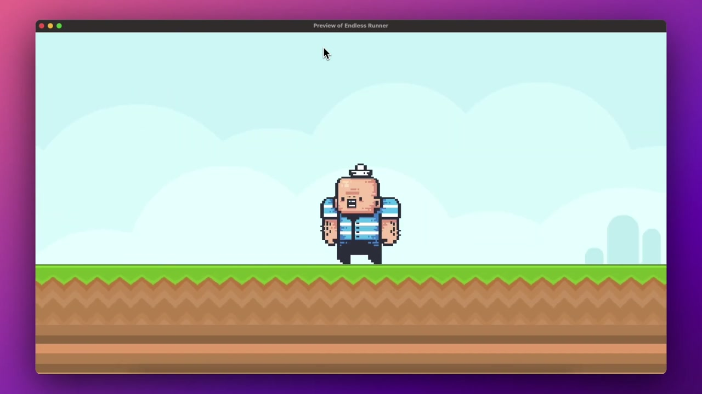
Buka GDevelop dan buat proyek baru
Video: "sebelum masuk ke software-nya, kamu perlu mengunduhnya". Minta bantuan orang dewasa untuk mengunduh dari situs resmi GDevelop, lalu buka aplikasinya.
Setelah terbuka, kamu akan lihat jendela seperti di bawah ini — ada proyek, template, dan aset.
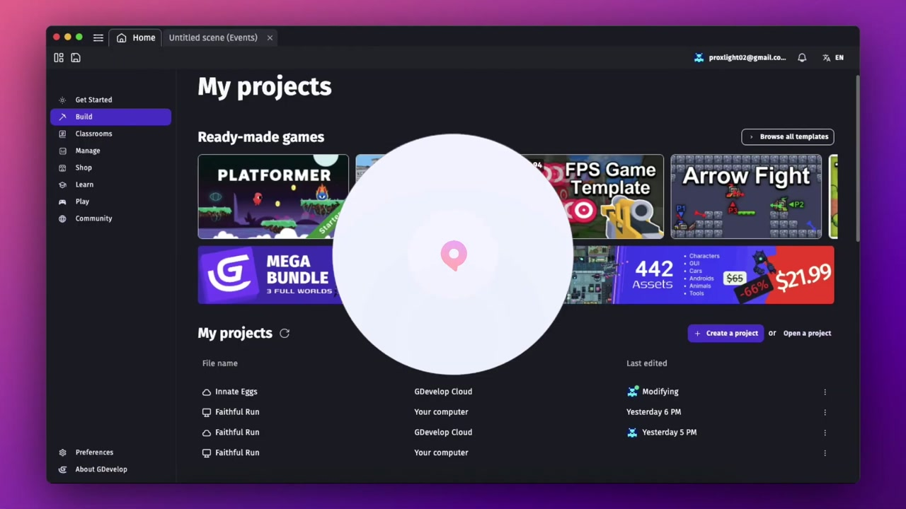
Klik Create a project (Buat Proyek). Beri nama proyekmu, misalnya Endless Runner. Kalau bingung nama, ada tombol Randomize di video.
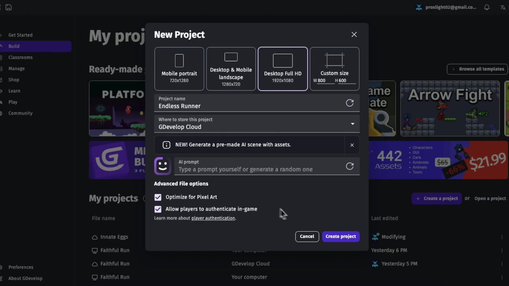
Boleh pakai nama apa saja. Pilih Desktop Full HD dan centang optimize for pixel art persis seperti video — karena karakter kita nanti bergaya pixel art.
Ini dia "rumah" kita selanjutnya
Video: "setelah ini kamu bisa lihat interfacenya — sangat simple dan sangat mudah digunakan." Kamu akan melihat tiga tempat penting:
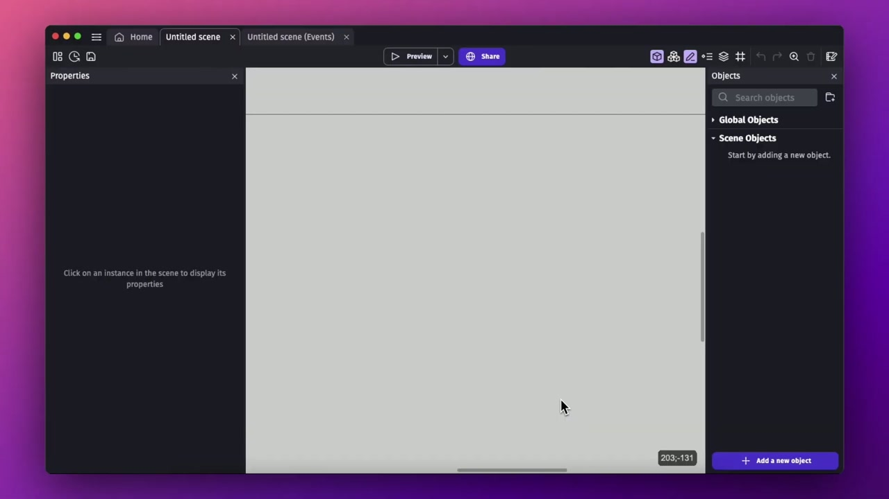
- Objects (kiri): tempat menyimpan semua "benda" di game — karakter, tanah, batu.
- Kanvas / Scene (tengah): panggung besar tempat game dimainkan.
- Events (tab di atas): tempat kita menyusun "balok perintah". Kata video: "di sini kamu punya very simple objects option."
Ada apa saja di dalam Objects?
Video menjelaskan jenis-jenis objek: "objek bisa berisi berbagai hal — Sprite (karaktermu), tile Sprite (untuk membuat tanah), 3D box, dan 3D model."
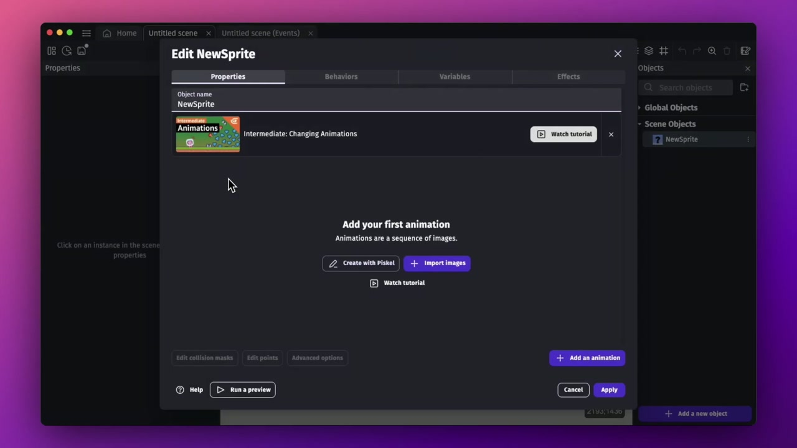
Kita baru pakai Sprite dan tile Sprite di course ini. Yang lain cukup dilihat dulu.
Tekan Play! (proyek masih kosong)
Bagian atas ada tombol preview (▶). Video menekannya setiap kali mau melihat hasil. Tekan sekarang — jendela game akan terbuka, tapi masih kosong karena kita belum menambahkan apa-apa. Itu normal! Tutup jendelanya dan kembali ke editor.
Tombol preview inilah "jendela sihir" kamu. Setiap habis menyusun perintah, tekan preview untuk melihat hasilnya. Jangan lupa tutup jendela sebelum lanjut mengedit.
Resep: buka proyek GDevelop
- Buka aplikasi/browser GDevelop.
- Klik Create a project → isi nama.
- Pilih Desktop Full HD → centang optimize for pixel art.
- Klik Create project.
- Tekan ▶ untuk preview (belum ada apa-apa, wajar).
Berhenti saat bingung
Kalau jendela GDevelop tiba-tiba aneh: tutup jendela preview, klik area Objects, dan cari tombol ▶ lagi. Galau itu biasa, semua pembuat game pernah mengalaminya!
Mengapa ini bekerja
GDevelop adalah engine game tanpa kode. Alih-alih menulis kode, kamu menyusun kondisi ("jika tombol kanan ditekan") dan aksi ("gerakkan karakter ke kanan"). Konsep ini dipakai semua game, dan ada di tab Events.
Video menekankan tiga hal bisa dilakukan hanya dengan klik dan seret: buat objek, atur gambar, dan hubungkan perintah — semuanya tanpa mengetik kode.
Referensi cepat — kata-kata penting
| Kata | Artinya (bahasa sehari-hari) |
|---|---|
Sprite | Gambar karakter/benda bergerak |
tile Sprite | Gambar yang bisa diulang untuk membuat tanah/dinding |
Scene / Kanvas | Panggung tempat game dimainkan |
Objects | Tempat menyimpan benda-benda game |
Events | Tab tempat menyusun perintah kondisi → aksi |
Preview | Tombol ▶ untuk mencoba menjalankan game |
Ujian akhir — Module 1
Kamu baru saja membuka GDevelop. Ayo pastikan kamu ingat tiga area pentingnya!
1. Di GDevelop, tempat kita menyusun perintah ("jika tombol ditekan → gerak") adalah…
2. Mana yang benar tentang jenis objek di video?
Tanpa mengubah apa pun, coba klik semua tombol di atas editor satu per satu (kecuali tombol berbahaya seperti Hapus). Catat di buku: tombol apa yang muncul jendela Baru? Tulis LOG 1 baris kamu.
Karaktermu Mulai Hidup
Tambahkan karakter player, buat animasi idle dan run, lalu lihat dia bergerak di preview.
Mengapa satu gambar saja tidak cukup?
📖Pernah membuat flipbook? Kamu menggambar di pojok buku, lalu membalik halamannya cepat-cepat dan gambarnya "hidup". Animasi di game bekerja persis seperti itu: beberapa gambar yang berganti cepat membuat mata kita mengira ada gerakan.
Di video, karakter kita punya posisi idle (berdiri) dan animasi lari. GDevelop menyebut kumpulan gambar ini animasi. Hari ini kita "menghidupkan" karakter dengan dua animasi ini.
Tambahkan objek Sprite bernama player
Di panel Objects, klik tambah ➕ → pilih Sprite. Beri nama player.
Import gambar idle dari Asset Store
Cari gambar karakter (asset store). Ini posisi berdiri (idle).
Rename animasi pertama menjadi idle
Video: "menamai setiap animasi itu bagus untuk mengorganisir animasimu".
Tambah animasi kedua: run + Loop
Import 2–3 gambar lari, beri nama run, nyalakan Loop, atur timing.
Tekan Preview & lihat karakter lari
Tonton animasi di jendela preview — karakter "berlari di tempat".
Tambah Sprite "player"
Video memulai: "mari mulai dengan Sprite — saya akan menambahkan Sprite dan menamainya player."
Klik tombol tambah objek ➕ di panel Objects, pilih Sprite, lalu ketik nama player.
player, persis video.Berikan gambar "berdiri" untuk karaktermu
Video: "mari import gambarnya dari asset store — ini gambar untuk posisi idle kita." Asset Store adalah perpustakaan gambar gratis di GDevelop.
Cari gambar karakter yang kamu suka, lalu pilih. Ini gambar pertama = posisi berdiri (idle).
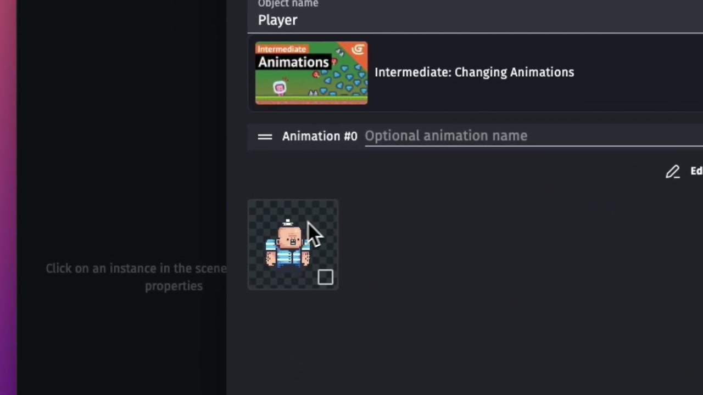
player dengan gambar idle pertamanya.Kamu boleh pilih karakter mana pun dari Asset Store — tidak harus sama persis dengan video. Yang penting ada gambar berdiri / berjalan.
Rename animasi menjadi idle
Video menekankan kebiasaan baik: "menamai setiap animasi dengan jelas akan sangat membantu untuk mengorganisir animasi-animasimu." Di panel animasi, ubah nama animasi pertama menjadi idle.
Kenapa? Supaya nanti di Module 6 kita bisa menyuruh karakter "kembali ke idle" dengan memanggil nama itu.
Tambah animasi lari + Loop
Video: "kita akan menambahkan animasi lain, namanya run. Tambahkan beberapa Sprite, lalu nyalakan Loop. Kamu bisa ubah timing-nya — cepat atau lambat."
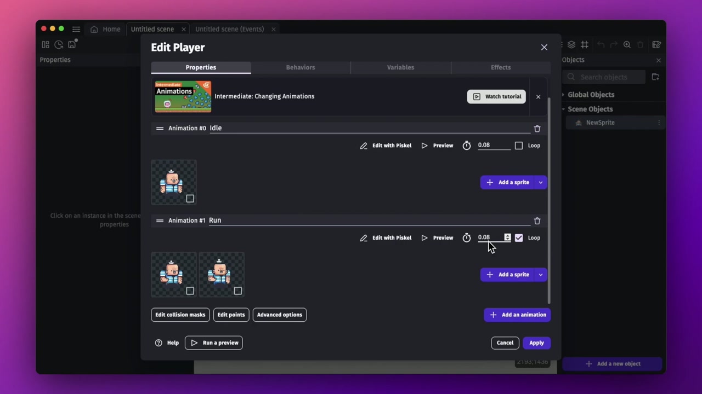
run — beberapa gambar berurutan + Loop menyala.Tonton karaktermu "lari"
Video: "mari lihat preview-nya — seperti yang kamu lihat, kita punya karakter yang sedang berlari." Tekan ▶ dan perhatikan karaktermu berputar gambar (berlari di tempat). Coba ubah timing animasinya supaya lebih cepat atau lambat, lalu lihat bedanya.
Resep: tambah animasi
- Panel Objects → ➕ → Sprite → nama
player. - Klik karakter di daftar → panel Animations.
- Import gambar (Asset Store) → + animasi baru.
- Rename:
idle,run. - Untuk animasi run: import beberapa frame → Loop ON.
- Preview ▶ dan setel timing.
Mengapa dua animasi?
Animasi adalah flipbook digital. Tapi kalau karaktermu hanya punya gambar berdiri, dia tidak akan bisa "berlari". GDevelop memakai nama animasi (idle / run) supaya kamu bisa memerintahkan: "kalau sedang lari, pakai animasi run; kalau diam, pakai idle." Konsep ini (posisi diam vs gerak) ada di semua game.
Referensi cepat
| Istilah | Artinya |
|---|---|
Animation idle | Gambar saat karakter diam/berdiri |
Animation run | Gambar berurutan saat lari (flipbook) |
Loop | Ulangi animasi terus-menerus |
Timing | Kecepatan pergantian gambar |
Asset Store | Perpustakaan gambar gratis di GDevelop |
Ujian akhir — Module 2
Karaktermu mulai hidup. Mari pastikan kamu paham animasi.
1. Animasi dalam game bekerja seperti…
2. Mengapa kita memberi nama animasi (idle, run)?
Ubah timing animasi run menjadi sangat lambat, lalu preview. Apakah lari-nya jadi "saklek" (seperti robot)? Ubah lagi jadi sangat cepat. Tulis LOG 1 baris: bedanya apa?
Ayo Melompat!
Berikan gravity (gravitasi) agar karakter bisa lompat, dan buat tanah tempat dia berlari.
Mengapa karakter butuh gravitasi & tanah?
☀️Kalau kamu melompat di dunia nyata, apa yang membuatmu kembali turun? Gravitasi! Tanpa gravitasi, karaktermu akan melayang ke angkasa seperti balon yang lepas.
Di video, Proxlight memberi player behavior Platformer Character — ini "tubuh" karakter: dia kena gravitasi, bisa lari, dan bisa melompat. Lalu kita buat tanah memakai tile Sprite, dan bilang ke tanah: "jadilah platform yang bisa ditapaki." Video: "kita perlu tanah supaya player bisa berlari di atasnya."
Tambah behavior Platformer Character ke player
Klik player → tab Behaviors → Add → Platformer Character.
Jelajahi pengaturan (gravity, jump speed)
Video: "kamu bisa ubah jump speed atau gravity di sini."
Tarik player ke kanvas, perbesar sedikit
Seret ke tengah panggung, ubah ukuran.
Buat tanah dengan tile Sprite + gambar ground
Objek tile Sprite diisi gambar tanah; seret ke bawah kanvas.
Beri tanah behavior Platform (supaya bisa ditapaki)
"Behavior itulah yang penting — belum ada, si player jatuh menembus tanah."
Preview — player lari & lompat di atas tanah
Coba tombol panah kiri/kanan + lompat.
Berikan "tubuh" ke karakter: Platformer Character
Video: "tab Behavior sangat penting untuk player karena ia menambah fisika ke player-mu." Pilih objek player → buka tab Behaviors → klik Add → pilih Platformer Character.
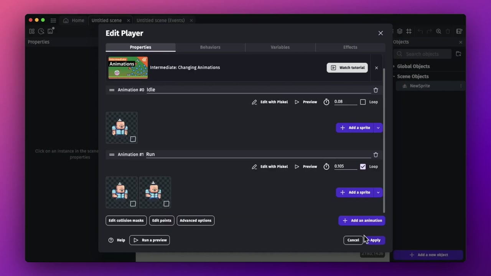
Jelajahi jump speed & gravity
Video: "secara default ia punya pengaturan tertentu — kalau ingin ubah jump speed atau gravity, bisa di sini." Lihat-lihat pengaturannya sekarang. Kita akan mengubahnya di Module 6 kalau lompatannya terlalu tinggi.
Letakkan karakter di atas panggung
Video menyeret player ke kanvas dan memperbesar sedikit. Cara menampilkan grid: video mengingatkan "kamu bisa klik Show grid untuk menampilkan garis bantu." Gunakan grid supaya letak karakter rapi.
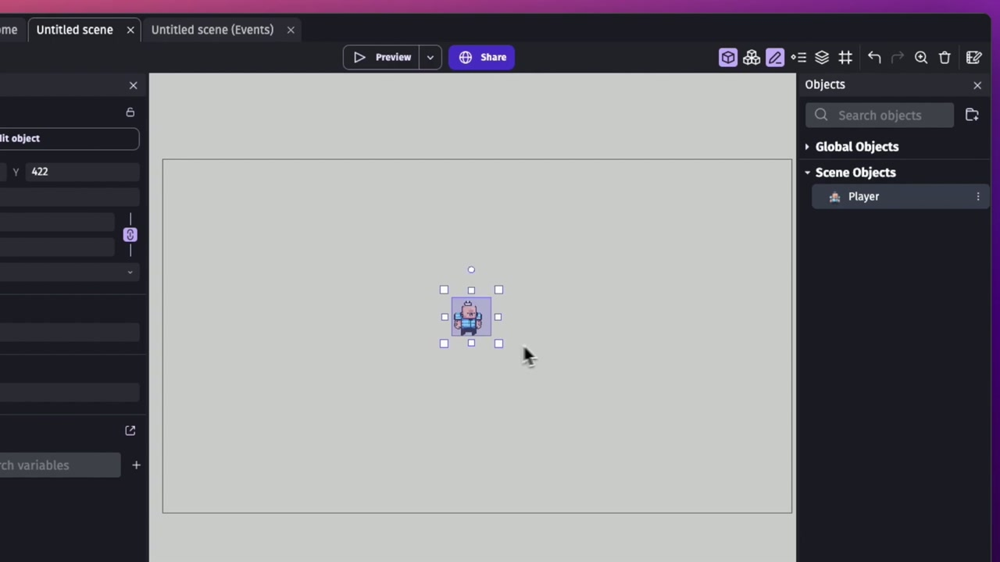
Buat tanah dengan tile Sprite
Video: "kita perlu tanah agar player bisa berlari di atasnya. Kali ini kita tambah objek tile Sprite." Beda dengan Sprite biasa: tile Sprite bisa diulang-ulang sehingga cocok untuk tanah/dinding panjang.
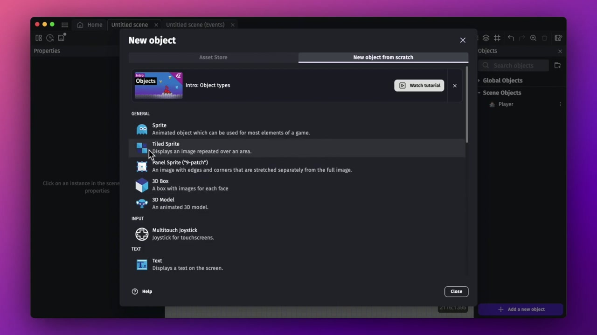
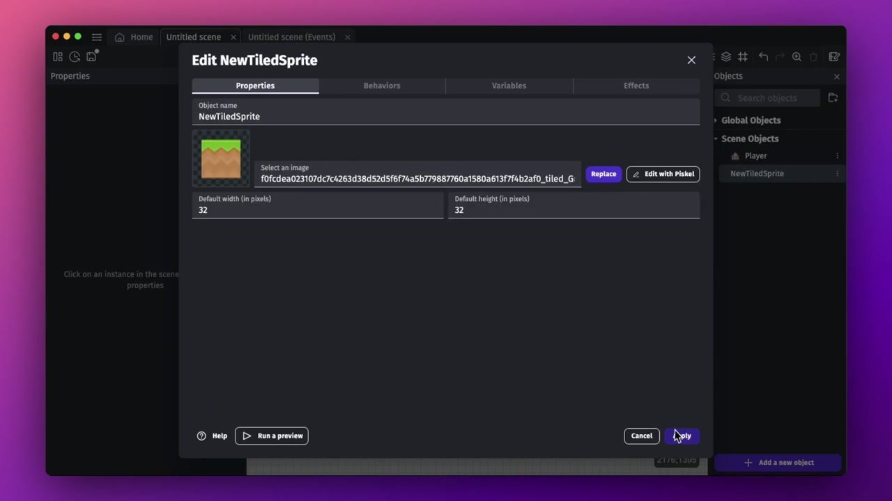
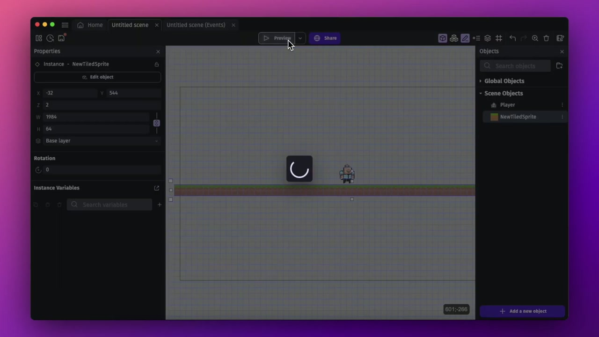
Beri tanah behavior "Platform"
Video: "player jatuh menembus tanah karena kita belum memberikan behavior ground. Ini penting!" Pilih objek tanah → Behaviors → Add → pilih Platform. Sekarang tanah bisa ditapaki.
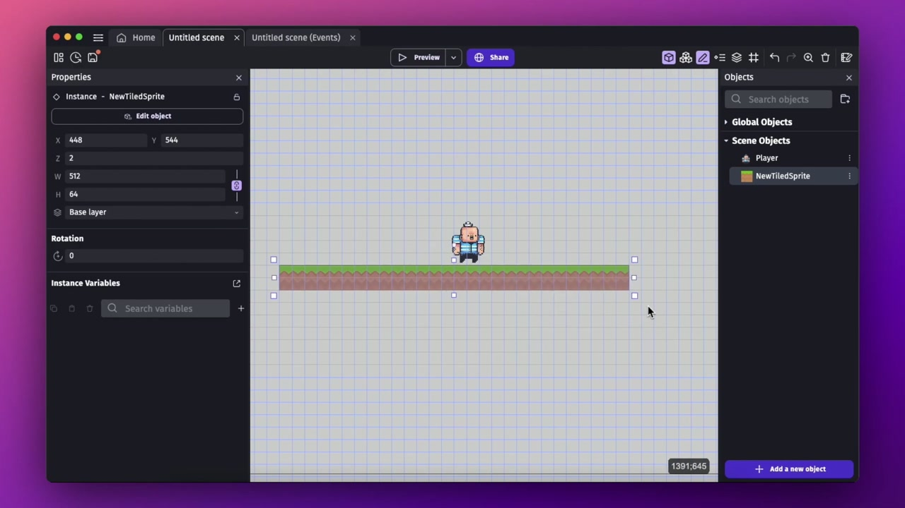
Mainkan game pertamamu!
Tekan ▶ dan coba: gerakkan player dengan panah kiri/kanan, dan lompat. Video: "kamu bisa menggerakkan player dan melompat." Selamat — kamu punya game mini (bukan endless runner penuh, tapi gerak + lompat sudah jalan).
Resep: lompat + tanah
- Player → Behaviors → Add → Platformer Character.
- (Stok: jump speed & gravity bisa diubah di sini.)
- Seret player ke kanvas.
- Objek tile Sprite + gambar tanah → seret ke bawah.
- Tanah → Behaviors → Add → Platform.
- Preview ▶.
Mengapa ini bekerja
Behavior adalah "otak bawaan" yang sudah ada di GDevelop. Platformer Character memberi 3 hal: gerak maju, gerak mundur, dan gerak lompat. Sedangkan Platform pada tanah membuat karakter bisa menapak, tidak jatuh menembus.
Video menegaskan batasnya: tanpa behavior Platform pada tanah, player "jatuh menembus" karena gravitasi terus menariknya.
Referensi cepat
| Istilah | Artinya |
|---|---|
Behavior Platformer Character | Memberi gravitasi, lari, lompat |
Behavior Platform | Membuat objek bisa ditapaki |
gravity | Kekuatan menarik ke bawah |
jump speed | Kekuatan lompatan |
Show grid | Garis bantu di kanvas |
Ujian akhir — Module 3
Karakter lari & lompat. Ayo cek pemahamanmu.
1. Setelah player diberi behavior Platformer Character tapi tanah belum diberi behavior, apa yang terjadi saat preview?
2. Behavior "Platformer Character" pada player menambah…
Buka pengaturan behavior Platformer Character, ubah jump speed menjadi sangat besar, lalu preview. Lompatan jadi secepat roket? Ubah jadi sangat kecil. Tulis LOG 1 baris: mana yang lebih menyenangkan?
Kamera Ikut Kamu
Buat kamera "mengekor" pemain: zoom-in di awal, dan mengikuti pergerakan karakter.
Mengapa kamera harus ikut bergerak?
🎥Coba bayangkan sedang memotret sepeda yang lewat. Supaya terus terlihat, kameramu harus ikut bergerak. Dalam game, kamera = "mata pemain". Kalau kamera diam, karaktermu akan cepat menghilang ke luar layar.
Di video, Proxlight pertama membuat kamera zoom ke karakter di awal game, lalu mengganti posisi kamera mengikuti karakter. Kita akan menyusun perintah ini di tab Events untuk pertama kalinya.
Buka tab Events
Ini pertama kalinya kita menyusun perintah!
Event 1: di awal scene, camera center ke player + zoom 2/3
Aksi: Center camera on object → player; Set zoom → 3.
Event 2: Camera X = Player.X()
Ini yang membuat kamera "ngekor" ke kanan/kiri.
Event 3: Camera zoom = 3 (biar dekat)
Set zoom per frame supaya tetap dekat saat karakter jalan.
Preview & bandingkan: dengan / tanpa kamera
Matikan event kamera → bandingkan.
Tempat menyusun perintah
Video: "kita akan menambahkan event ke game — misalnya di awal, kamera zoom ke karakter." Klik tab Events di bagian atas editor. Ini "jantung" GDevelop: daftar perintah kondisi → aksi.
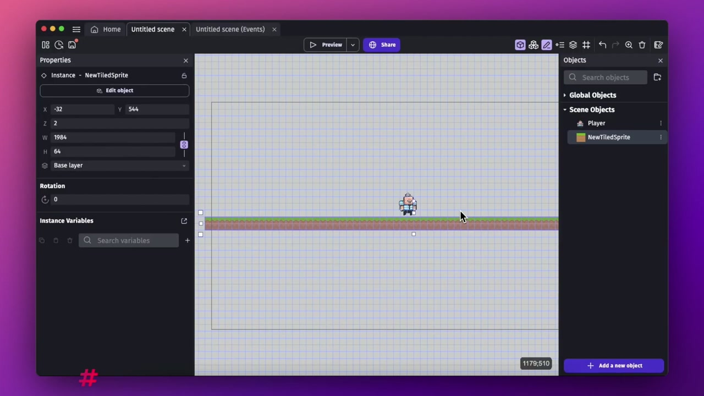
Buat event: kamera zoom ke player
Video: "di awal scene kita bisa tambah aksi: pilih objek player, lalu di bagian camera pilih center the camera on the object, lalu set zoom."
Buat event baru (di awal), pilih aksi: Camera → Center camera on object, objek player. Lalu ubah skala/zoom ke 2 atau 3. Video: "kamu bisa set ke 2, atau 3 — ini bekerja paling baik."
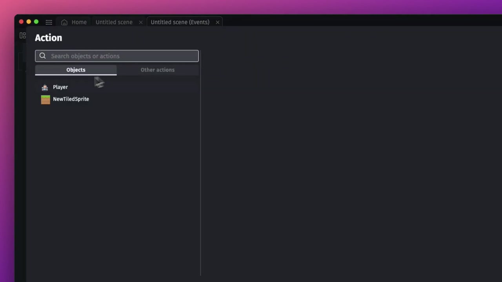
Buat event: Camera X = Player.X()
Video: "supaya saat player bergerak kamera mengikutinya, kita tambahkan event: camera X position = posisi X player." Buat event baru (tanpa kondisi — berjalan setiap frame), aksi: Camera → Change camera X position, isikan ekspresi posisi-X objek player.
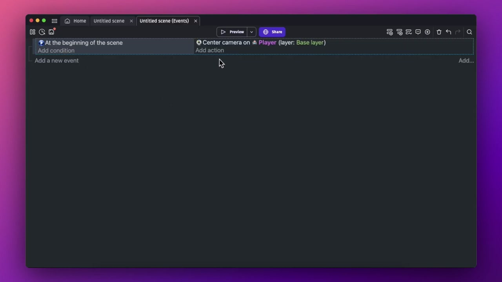
Kamu tidak perlu mengetik rumus. Di GDevelop, pilih objek player dan pilih center / X position dari menunya. Seret-klik saja!
Jaga jarak dekat: camera zoom
Video juga menyetel camera zoom = 3 dan menerapkannya ke layer dasar (base layer). Ini menjaga kamera tetap "dekat" supaya karaktermu besar terlihat.
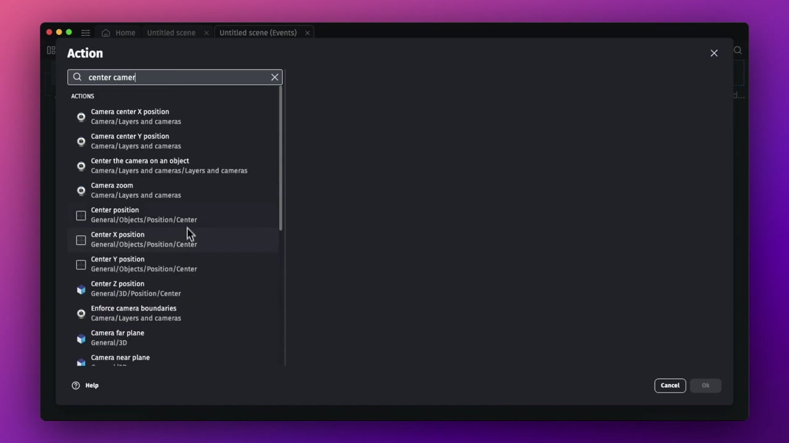
Coba dan bandingkan
Tekan ▶ dan gerakkan player. Kamera sekarang mengikuti! Sekarang coba: tahan tombol "matikan" event kamera (atau salin proyek) dan bandingkan. Tanpa kamera, karakter cepat menghilang dari layar. Video menunjukkannya dengan jelas.
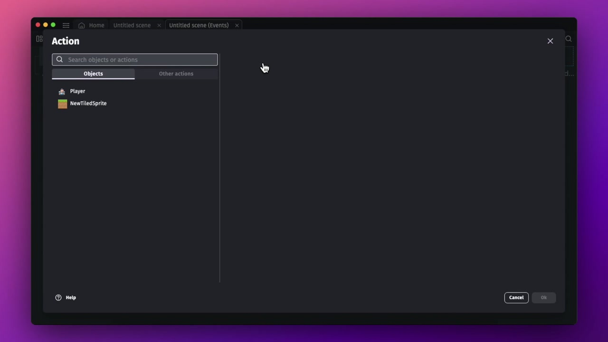
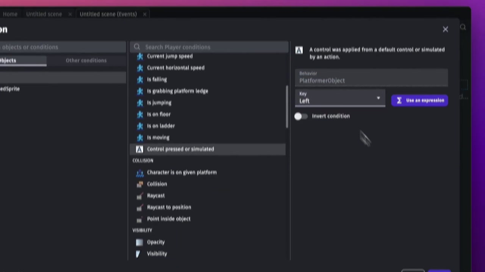
Resep: kamera ngekor
- Tab Events → buat event baru.
- Aksi: Center camera on object →
player. - Aksi: Set camera zoom → 2 atau 3.
- Event baru (tanpa kondisi): Change camera X position → posisi X
player. - Event baru: Set camera zoom → 3 → base layer.
- Preview ▶.
Mengapa ini bekerja
Kamera adalah "mata" game. Event tanpa kondisi di GDevelop berjalan setiap frame (60× per detik), jadi tiap kali karakter bergerak, posisi kamera langsung diperbarui ke posisi-X player. Karena hanya sumbu X yang diubah, kamera bisa "mengikuti" secara halus ke kiri–kanan tanpa keluar dari dunia game.
Referensi cepat
| Istilah | Artinya |
|---|---|
Camera | Mata pemain, menentukan apa yang terlihat |
Center camera on object | Buat kamera berpusat pada objek |
Camera X position | Posisi kiri-kanan kamera |
Camera zoom | Seberapa dekat/jauh gambar |
Base layer | Lapisan dasar tempat semua objek ditaruh |
Ujian akhir — Module 4
Kamera sekarang ngekor! Cek pemahamanmu.
1. Agar kamera terus mengikuti player, event "Camera X = Player.X()" dibuat…
2. Yang terjadi kalau kita tidak membuat kamera mengikuti player adalah…
Ubah camera zoom dari 3 menjadi 1.2 dan preview. Kamu melihat dunia game yang lebih luas, tapi karakter terlihat kecil — seperti kamera mundur. Ubah lagi ke 5. Tulis LOG 1 baris: zoom berapa yang paling enak dimainkan?
Tombol Ajaib
Buat karakter mendengar tombol → lari ke kanan/kiri + memainkan animasi, dan perbaiki flip (menghadap arah gerak).
Mengapa karakter perlu "mendengar" tombol?
📺Bayangkan remote TV. Tombol di remote tidak berguna kalau TV tidak "mendengarkan". Di game, tombol keyboard butuh telinga — dan telinga itu adalah Events. Video mengajarkan: "kalau kita tekan tombol kanan, player harus bergerak ke kanan dan memainkan animasi run."
Ini pelajaran paling seru: kamu akan menyusun perintah "jika ✚ ditekan → gerak + ganti animasi" untuk pertama kalinya.
Event: Tombol kanan ditekan → gerak kanan + animasi run
Cari kondisi Keyboard → key "Right". Lalu aksi gerak player.
Preview — karakter lari ke kanan
Coba juga tekan kiri: tidak terjadi apa-apa (itu wajar, kita belum bikin).
Duplikat event untuk tombol kiri
Copy → Paste → ubah key ke Left.
Tambah flip horizontal untuk arah kiri
Supaya karakter menghadap kiri saat lari ke kiri.
Perbaiki flip saat kembali ke kanan
Video: tambahkan aksi flip "No" pada event kanan.
Preview dua arah
Kiri & kanan halus, karakter menghadap arah lari.
Buat event "tombol kanan → gerak + animasi run"
Video: "kita buat event: jika tekan tombol kanan, player bergerak ke kanan dan memainkan animasi run." Klik kondisi Keyboard → Key pressed → Right, lalu aksi gerakkan player ke kanan (Platformer Character -> Gaya → Set speed, atau objek → geser) dan set animasi → run.
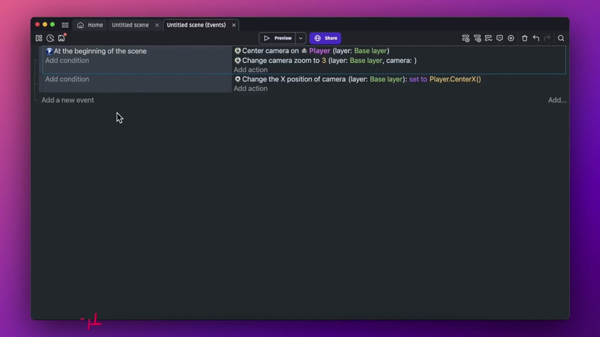
Perhatikan: kiri tidak jalan, dan saat berhenti masih lari
Video menunjukkan dua masalah: saat tekan kiri tidak terjadi apa-apa, dan saat berhenti tekan tombol, karakter masih memainkan animasi run. Ini wajar karena kita baru bikin event kanan. Kita perbaiki di langkah berikut.
Copy–paste, ubah ke tombol kiri
Video: "kamu bisa duplikat event — klik copy, lalu paste, ubah key-nya menjadi Left." Sekarang karakter bisa lari ke kiri juga.
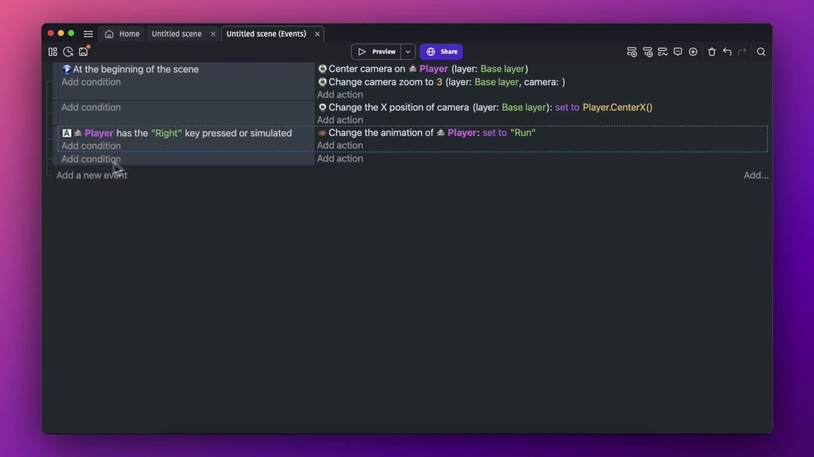
Balik gambar saat lari ke kiri
Video: "kita akan flip animasi atau objek supaya menghadap ke kiri." Tambahkan aksi Flip horizontally (Ya) pada event kiri.
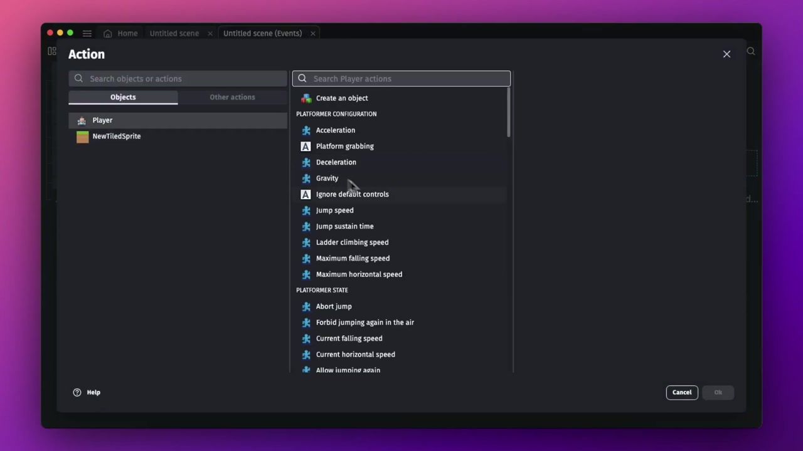
Atur "No" flip pada event kanan
Video menemukan masalah: setelah lari ke kiri, saat balik ke kanan karakter tidak membalik lagi. Solusinya: salin aksi flip ke event kanan dan ubah menjadi No (tidak dibalik). Video: "kita bisa perbaiki dengan menyalin statement ini dan mengubahnya menjadi no."
Mainkan: lari kiri–kanan
Tekan ▶ dan gerakkan ke dua arah. Karakter sekarang menghadap ke arah larinya!
Resep: kontrol keyboard
- Tab Events → + → kondisi Keyboard → Key pressed → Right.
- Aksi: gerak player ke kanan + animasi
run. - Copy row → paste → ubah key
Left. - Event kiri: tambah aksi Flip horizontally → Ya.
- Event kanan: tambah aksi Flip horizontally → No.
- Preview ▶.
Mengapa ini bekerja
Setiap event = "kondisi → aksi". Kondisi Keyboard right pressed "mendengar" tombol; aksi menyuruh objek bergerak dan ganti animasi. Flip memantulkan gambar kiri-kanan supaya karakter menghadap arahnya.
Masalah "belum flip saat balik" muncul karena event kiri mem-flip, tapi tidak ada yang mem-flip kembali. Solusi video: eksplisit set flip=No saat tombol kanan — contoh klasik menyelesaikan bug dengan satu aksi kecil.
Referensi cepat
| Istilah | Artinya |
|---|---|
Event | Perintah "jika … → maka …" |
Condition / Kondisi | "Jika tombol kanan ditekan" |
Action / Aksi | "Gerakkan player + animasi run" |
Duplicate / Copy-Paste | Menyalin event untuk diubah sedikit |
Flip horizontally | Memantulkan gambar kiri-kanan |
Ujian akhir — Module 5
Karakter menuruti perintah tombol. Uji pemahaman event.
1. Sebuah event di GDevelop terdiri dari…
2. "Flip horizontally" pada event kiri berguna untuk…
Balik ke awal: kita sudah membuat event kanan & kiri. Coba tambahkan event tombol Spasi → lompat (aksi: Platformer Character → Set jump). Ini belum diajarkan, tapi coba sendiri — penyelidikan itu bagian dari jadi pembuat game! Tulis LOG 1 baris hasilnya.
Rapi, Pas & Cantik
Perbaiki lompatan, hilangkan efek "melayang", kembalikan animasi idle, lalu hias dengan latar belakang.
Mengapa game perlu "dibereskan" & dihias?
🛏️Kamu sudah bisa bermain — tapi ada yang kurang pas: lompatan terlalu tinggi, karakter terlihat melayang saat lari, dan diam pun masih "berlari". Ini seperti kamar tidur yang baru kamu bersihkan tapi belum dirapikan. Video di penutupnya merapikan semua: "kita perbaiki lompatan, lekas, dan tambahkan background supaya game terlihat lebih bagus."
Bagian terakhir ini mengajarkan penyempurnaan: ubah nilai, perbaiki bug kecil, dan hias dunia game-mu.
Perbaiki lompatan: falling speed & sustain 0.1
Behavior Platformer Character → turunkan falling speed, set sustain time 0.1.
Hilangkan "melayang": Custom Collision Mask
Ubah collision mask agar kaki menyentuh tanah pas.
Kembali ke idle saat diam (invert kondisi)
Event: jika player sedang tidak bergerak → animasi idle.
Tambah latar belakang "BG" (tile)
Objek tiled + gambar background; taruh di belakang (layer base, Z-order 0).
Perbesar BG & atur Z order
Supaya menutup layar dan tidak menutupi karakter.
Hias: tambah batu/rumput di tanah
Objek tiled kecil di bawah karakter, supaya tanah tidak kosong.
Preview final & rayakan!
Game platformer sederhanamu selesai!
Turunkan kekuatan lompat
Video: "jump strength-nya agak terlalu tinggi, kita akan memperbaikinya." Di behavior Platformer Character, turunkan falling speed dan set sustain time = 0.1, lalu Apply.
Hasilnya lompatan jadi wajar — tidak seperti roket.
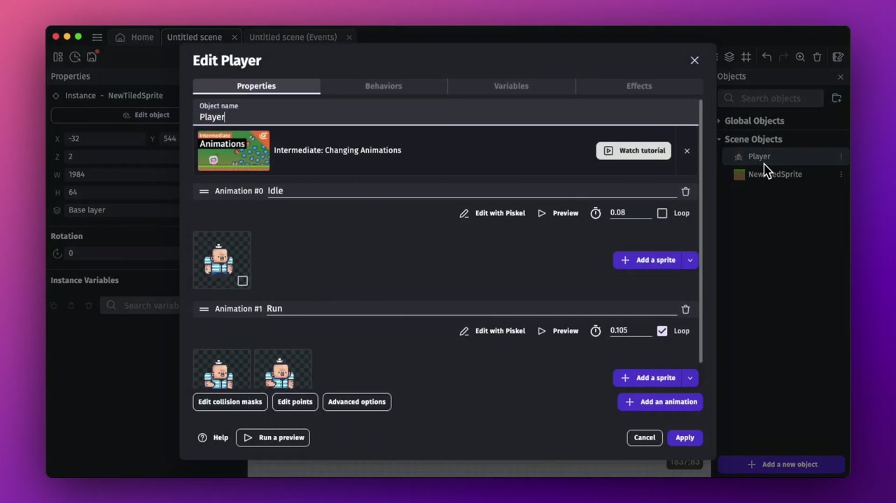
Perbaiki karakter "melayang": Custom Collision Mask
Video menemukan: saat lari, karakter tampak melayang sedikit di atas tanah. Penjelasan video: bentuk tabrakan (collision mask) karakter lebih besar dari gambar, sehingga "mengambang".
Solusi: klik dua kali objek → Edit Collision Mask → gunakan Custom Collision Mask, samakan dengan bentuk gambar (misal lebih ramping), supaya kaki pas menyentuh tanah.
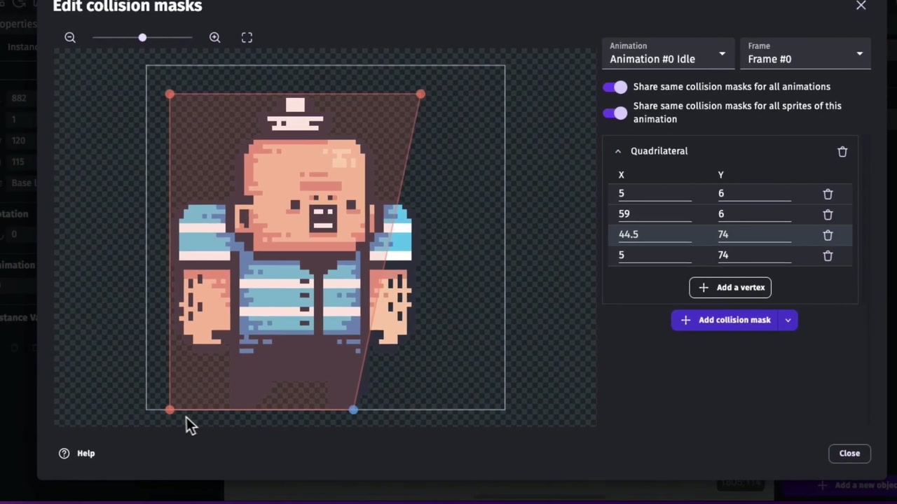
Collision mask adalah "kulit tabrakan" objek. Kalau lebih besar dari gambarnya, karakter terlihat mengambang/tersangkut.
Saat diam, hentikan animasi run
Video: "kalau player tidak sedang bergerak, kembalikan animasi ke idle." Caranya: buat event dengan kondisi "player tidak bergerak" — di GDevelop kita bisa invert (membalik) kondisi "player sedang bergerak". Lalu aksi: Set animation → idle.
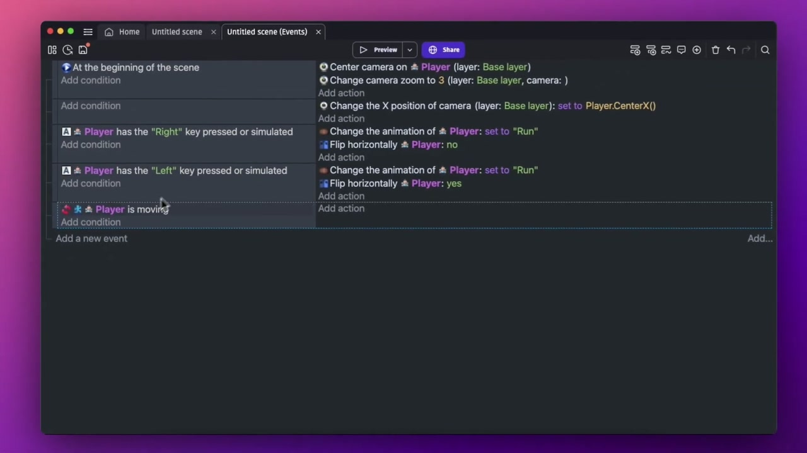
Tambah background "BG"
Video: "mari tambahkan background supaya game terlihat lebih bagus." Buat objek tiled Sprite baru, beri nama BG, ambil gambar background dari Asset Store. Klik Apply.
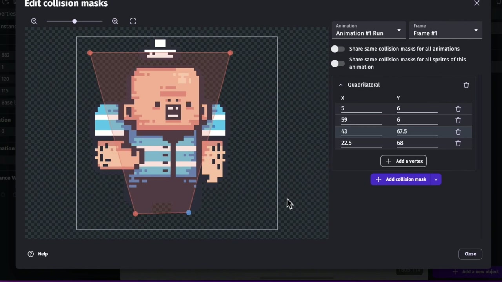
BG diisi gambar latar dari Asset Store.Kirim background ke belakang
Video: "letakkan di base layer, ubah Z order ke 0 supaya pindah ke belakang." Atur Z-order (urutan tumpuk) BG = 0 sehingga karakter dan tanah tetap terlihat di depan.
Kamu juga bisa perbesar BG supaya menutup seluruh layar.
Tambahkan batu/rumput biar tidak kosong
Video: "tanahnya terlihat agak kosong, jadi mari tambahkan bebatuan." Buat objek tiled kecil (misal soil), ambil gambar batu/rumput dari Asset Store, resize, lalu letakkan di sepanjang tanah.
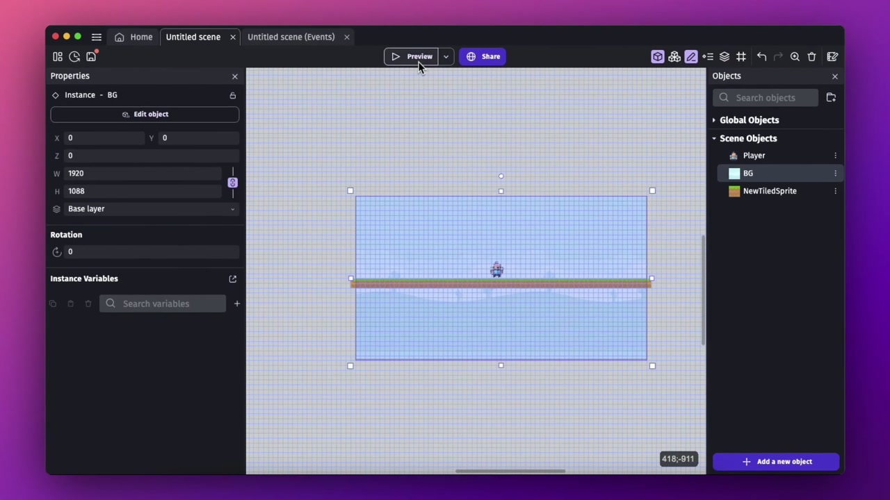
Mainkan & rayakan!
Tekan ▶. Karakter lari di dunia yang sekarang punya latar belakang, tanah, lompatan pas, dan animasi idle. "Mudah sekali, kan?" — kata video. Kamu baru saja membuat game pertamamu!
Resep: polesan akhir
- Behavior Platformer Character: falling speed ↓, sustain 0.1.
- Edit Collision Mask → Custom, sesuaikan bentuk.
- Event: kondisi "tidak bergerak" → animasi idle (invert).
- Objek tiled
BG+ gambar background, Z-order 0. - Objek tiled kecil (batu/rumput) di tanah.
- Preview ▶ dan mainkan!
Mengapa penyempurnaan itu penting
Game yang "bisa dimainkan" dan game yang "enak dimainkan" itu beda. Tiga penyelarasan ini — lompatan, collision mask, animasi diam — membuat game terasa adil dan nyaman. Video menutup dengan pesan: "begitu saja — begini cara kamu membuat game dasar sangat simpel hanya dengan GDevelop."
Collision mask yang lebih kecil dari gambar menyelesaikan "melayang"; invert kondisi mengubah "sedang bergerak" menjadi "tidak bergerak" dengan sekali klik — dua trik yang sering dipakai pembuat game.
Referensi cepat
| Istilah | Artinya |
|---|---|
Falling speed | Kecepatan jatuh setelah lompat |
Sustain time | Berapa lama lompatan "ditahan" |
Collision mask | Kulit tabrakan objek |
Invert condition | Membalik kondisi (bergerak → tidak bergerak) |
Z order | Urutan tumpuk objek (0 = paling belakang) |
Base layer | Lapisan dasar semua objek |
Ujian akhir — Module 6
Ini ujian pamungkas. Kamu sudah tahu hampir semuanya!
1. Untuk mengembalikan karakter ke animasi idle saat diam, kita memakai tombol…
2. Karakter terlihat 'melayang' saat lari karena…
Berani melangkah lebih jauh? Coba salah satu: (a) ubah background jadi malam hari, (b) tambah tombol Spasi untuk lompat (kalau belum), atau (c) tambahkan suara langkah simple. Tulis LOG 1 baris: apa yang kamu coba dan hasilnya.